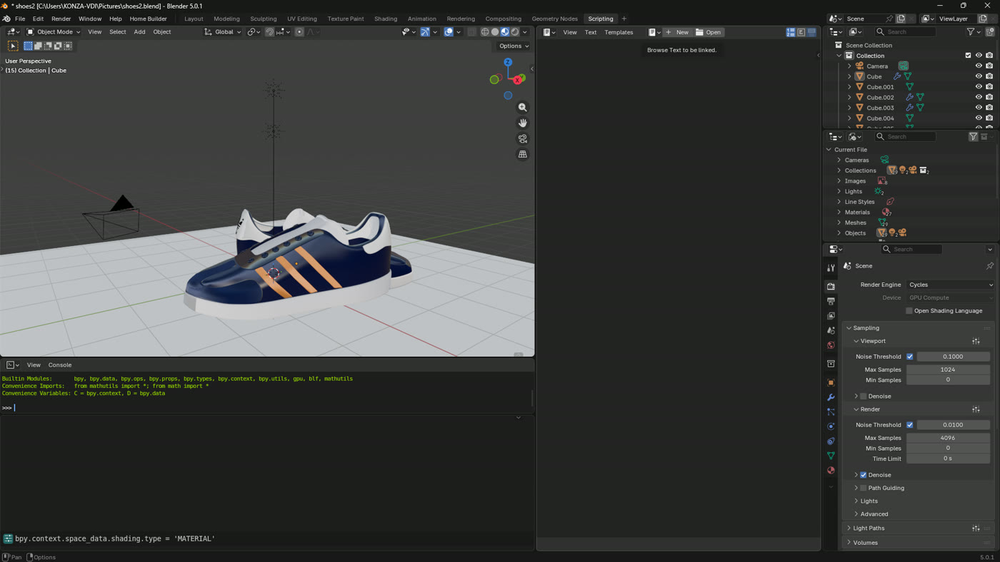
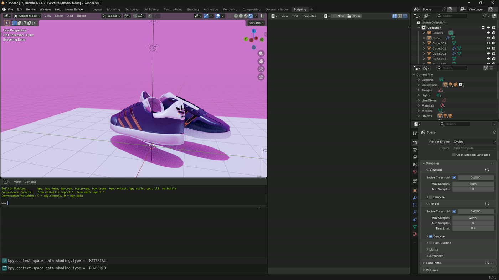
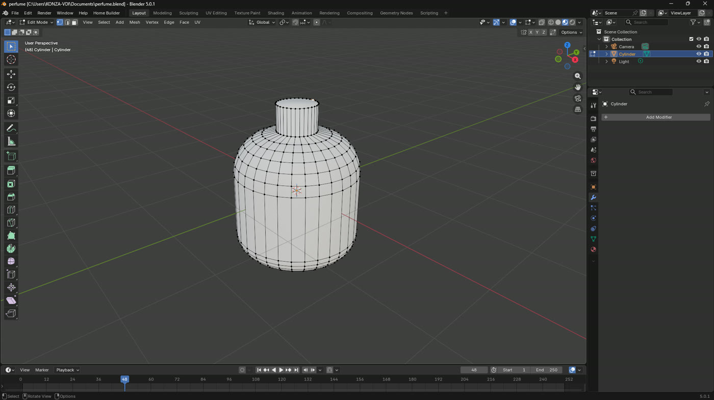
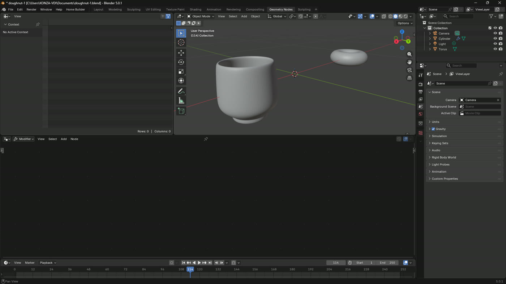

Product modelling, graphic work and video. Half of it is client work and the other half is what I stand in front of a class and teach, which is why it has to be correct rather than merely convincing.




These are product studies rather than commissions: an object modelled from nothing, given materials, lit, and rendered as though it were being photographed. Footwear and glass are the two that punish carelessness, one because the eye knows exactly what a shoe looks like, the other because the whole image is refraction and reflection.
The useful thing about modelling a product that does not exist yet is that a business can see it before paying to manufacture it. That is the same argument as a prototype in software, and it is why this sits on the same site as the code rather than on a separate one.
Posters, social pieces and print layout, made in whatever the job actually needs. Photoshop and Illustrator when the work is original, InDesign when it runs to pages, Canva when somebody on the other end has to be able to edit it after I hand it over. That last one matters more than designers like to admit: a beautiful file nobody can open again is a file that gets remade badly.
Editing, colour and delivery, under Njia, which is the production and training half of what I run. Video is the part of this list that most often has to be taught rather than delivered, because an organisation with a phone camera and somebody willing to learn does not need to hire a crew every time.
Graphic Design and Videography are two of the five specialisation paths on Beyond Form 4, around forty and thirty hours each. So this is not a side interest listed to look well rounded. It is a subject I am responsible for other people learning, which is a different standard from being able to do it myself.